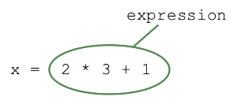
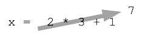

Python Math
The math of a computer program is most often nested in what is called an expression like this:

Expressions are built up with operators like + and * to make a mathematical expression. When the line with the expression runs, Python evaluates it, running the math to figure out its value.
Visualization aside: Python evaluates an expression, reducing it to a single value. In a sketch, that process is often drawn as an arrow that crosses out the expression, showing its value, like this:

To understand math in Python, we'll look at the different operators like + in expressions.
Numbers - int and float
Surprisingly, there are two distinct types of numbers for doing arithmetic in a computer - int for whole integer numbers like 6 and 42 and -3, and float for numbers like 3.14 with a decimal fraction.
Add Subtract Multiply Divide + - * /
We'll start with int examples, and float works very similarly. The Python "int" type represents whole integer values like 12 and -2.
Addition, subtraction, and multiplication and division work the usual way with the operators: + - * /. Division by zero is an error. Here are some expression examples in the interpreter and what they evaluate to:
>>> 2 + 1 3 >>> 1 + 10 - 2 9 >>> 2 * 3 * 4 24 >>> 2 * 6 / 3 4.0 >>> 6 / 0 ZeroDivisionError: division by zero
You can try expressions like this yourself in the interpreter, see also: Python Interpreter
Precedence
Just as in regular mathematics, multiplication and division have higher "precedence" than addition and subtraction, so they are evaluated first in an expression. After accounting for precedence, the arithmetic is done left-to-right.
e.g. here the multiplication happens first, then the addition:
>>> 1 + 2 * 3 7 >>> 1 + 3 * 3 + 1 11
Add in Parenthesis
Add parenthesis in the expression to control which operations are evaluated first. It's fine to add parenthesis into your code to make explicit the operation order you want.
>>> (1 + 2) * 3 # Do the addition first 9
60 / 2 * 3
What is the value of this expression: 60 / 2 * 3
The multiplication and division have the same precedence, so this simply proceeds left-to-right, applying each operator in turn to a running result, but this can be a little unintuitive. For 60 / 2 * 3, the steps are..
1. start with 60 2. 60 / 2 yielding 30.0 3. 30.0 * 3 yielding 90.0
The 2 is in the denominator, but the 3 is not. To put both the 2 and 3 in the denominator, use parenthesis e.g. 60 / (2 * 3)
>>> 60 / 2 * 3 90.0 >>> 60 / (2 * 3) 10.0
Division / Yields Float
One problem problem with / is that it does not produce an int, it produces a float.
This is basically reasonable — 7 divided by 2 isn't an integer.
>>> 7 / 2 3.5 # a float, notice the "."
Adding subtracting or multiplying two ints always yields an int result, but division is different. The result of division is always a float value, even if the division comes out even.
>>> 9 / 2 4.5 >>> 8 / 2 4.0 >>> 101 / 8 12.625
// int Division
The / operator always produce a float. However many algorithms make the most sense if all of the values are kept as ints, so we need a different sort of division operator that produces ints. In Python the int-division operator // rounds down any fraction, always yielding an int result.
>>> 9 / 2 # "/" yields a float, not what we wanted 4.5 >>> 9 // 2 # "//" rounds down to int 4 >>> 8 // 2 4 >>> 87 // 8 10 >>> 80 // 8 10 >>> 79 // 8 9
Language aside: other languages like C and Java have a more complicated way of separating float and int division. Python with its two explicit operators, / for float results and // for int results, is refreshingly straightforward.
Exponentiation **
The ** operator does exponentiation, e.g. 3 ** 2 is 32
>>> 3 ** 2 9 >>> 2 ** 10 1024
Unlike most programming languages, Python int values do not have a maximum. Python allocates more and more bytes to store the int as it gets larger. The number of grains of sand making up the universe when I was in college was thought to be about 2100, playing the role of handy very-large-number (I think it's bigger now as they keep finding more universe). In Python, we can write an expression with that number and it just works.
>>> 2 ** 100 1267650600228229401496703205376 >>> 2 ** 100 + 1 1267650600228229401496703205377
Memory use approximation: int values of 256 or less are stored in a special way that uses very few bytes. Other ints take up about 24 bytes each in RAM.
Int Modulus %
The "modulus" or "mod" operator % is essentially the remainder after division. So (23 % 10) yields 3 — divide 23 by 10 and 3 is the leftover remainder.
>>> 23 % 10 3 >>> 36 % 10 6 >>> 43 % 10 3 >> 40 % 10 # mod result 0 = divides evenly 0 >>> 17 % 5 2 >>> 15 % 5 0
If the modulo result is 0, it means the division came out evenly, e.g. 40 % 10 above. The best practice is to only use mod with non-negative numbers. Modding by 0 is an error, just like dividing by 0.
>>> 43 % 0 ZeroDivisionError: integer division or modulo by zero
Review Expressions
What is the value of each expression? Write the result as int (6) or float (6.0).
>>> 2 * 1 + 6 8 >>> 20 / 4 + 1 6.0 >>> 20 / (4 + 1) 4.0 >> 40 / 2 * 2 40.0 >>> 5 ** 2 25 >>> 7 / 2 3.5 >>> 7 // 2 3 >>> 13 % 10 3 >>> 20 % 10 0 >>> 42 % 20 2 >>> 31 % 20 11
Float Type
Floating point numbers are used to do math with real quantities, such as a velocity or angle. The regular math operators + - * / ** work the same as before, taking in and producing floats.
>>> 1.5 + 3.3 4.8 >>> 1.0 + 2.0 * 3.0 # precedence * before + 7.0
If an expression mixes an int value with a float value, like 26 + 2.0, the int value is converted to a float at that point, and the math proceeds with float values. This one-way street is called "promotion" from int to float.
>>> 1 + 2.0 + 3 # promotion 6.0 >>> 1 + 2 + 3 6 >>> 2.5 + 1 3.5
Float values can be written in scientific notation with the letter 'e' or 'E', like this:
>>> 1.2e23 * 10 1.2e+24 >>> 1.0e-4 0.0001
Converting from float to int
The int() function drops the fractional part of a float number, essentially always rounding towards 0.
>>> int(4.3)
4
>>> int(6.89)
6
>>> int(-5.4)
-5
>>> int(4.0)
4
>>> int('23') # also str to int
23
The round() function does traditional rounding of a float value to the nearest int value.
>>> round(4.3) 4 >>> round(6.89) 7 >>> round(-5.4) -5 >>> round(4.0) 4
Optional detail about rounding: How should rounding work for a number like 2.5 which is exactly halfway between the ints 2 and 3? Most people know the simple round-up rule, rounding up to the next larger integer, e.g. 2.5 rounds up to 3. Python does something slightly different. Python uses the
round-to-even convention which rounds to whichever int is even for the 0.5 case, e.g. 2.5 also rounds to 2, and 3.5 rounds to 4. This avoids certain statistical problems in groups of rounded numbers. This has almost no effect in practice, and is not something Python programmers need to memorize. Just mentioning it here so you are not confused when trying round() in the interpreter.
>>> round(2.5) # choose 2 instead of 3 2 >>> round(2.500001) 3 >>> round(3.5) # choose 4 instead of 3 4
Float Error Term
Famously, floating point numbers have a tiny error term that builds up way off 15 digits or so to the right. Mostly this error is not shown when the float value is printed, as a few digits are not printed. However, the error digits are real, throwing the float value off a tiny amount. The error term will appear sometimes, just as a quirk of how many digits are printed (see below). This error term is an intrinsic limitation of floating point values in the computer. (Perhaps also why CS people are drawn to do their algorithms with int if possible.)
>>> 0.1 + 0.1 0.2 >>> 0.1 + 0.1 + 0.1 0.30000000000000004 # this is why we can't have nice things >>> 0.1 + 0.1 + 0.1 + 0.1 + 0.1 + 0.1 + 0.1 0.7 >>> 0.1 + 0.1 + 0.1 + 0.1 + 0.1 + 0.1 + 0.1 + 0.1 0.7999999999999999
Mostly, an error 15 or so digits off to the right does not invalidate your computation. However, it means that code should not use == with float values, since the comparison will be thrown off by the error term. To compare float values, subtract them and compare the absolute value of the difference to some small delta.
>>> # are float values a and b the same?
>>> diff = abs(a - b) # abs() is absolute value
>>> if diff < 1.0e-9: # same if diff less than 1 billionth
...
Memory use approximation: float values take up about 24 bytes each.
Copyright 2020 Nick Parlante